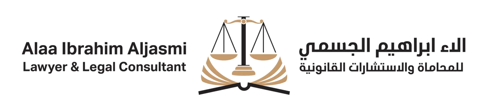

جدول المحتوى
محامي الطلاق دور محامي الطلاق في قضايا الطلاق او قضايا الاسرة تقديم المشورة القانونية إعداد الوثائق القانونية تمثيل العملاء في المحاكم حماية حقوق الأطفال التعامل مع القضايا المعقدة التوجيه في الإجراءات القانونية التثقيف القانوني ماهي القوانين التي يستند عليها محامي الطلاقي في الامارات؟ كيف اختار محامي طلاق؟ البحث والمراجعة لماذا تختار مكتب آلاء إبراهيم الجسمي لقضايا الطلاق؟ للتواصل
تواجه العديد من النساء تحديات كبيرة عند الطلاق في الامارات، حيث تزداد تعقيدات القوانين و اجراءات الطلاق في دبي التي تتطلب فهمًا عميقًا لقانون الأحوال الشخصية. هذا القانون يتضمن تفاصيل دقيقة تتعلق ب حقوق الزوجة بعد الطلاق من حيث النفقة، الحضانة، وتقسيم الممتلكات، والتي قد تكون صعبة الفهم والإحاطة بها دون مساعدة مختص قانوني. في هذا السياق، تصبح الحاجة إلى محامي طلاق ضرورية لضمان استرداد المرأة لحقوقها كاملة وحمايتها من أي ظلم قانوني. وهنا يبرز مكتب آلاء ابراهيم الجسمي الذي يعد أفضل مكتب محاماة في الامارات المتخصص في قضايا الطلاق، حيث يتقدم الدعم القانوني والمساندة الشاملة للمرأة لضمان حقوقها والوقوف بجانبها في كل خطوة من خطوات القضية
محامي الطلاق
محامي الطلاق هو الداعم القانوني الذي يقف بجانب الافراد في خلال مرحلة حساسة وشديدة التعقيد. فهو يعمل على توجيه عملائه نحو فهم كافة الجوانب القانونية المرتبطة بالطلاق، مع التركيز على تحقيق العدالة لجميع الأطراف. يتميز محامي الطلاق في الإمارات بمعرفته المتعمقة بالقوانين المحلية والعادات الاجتماعية، مما يمكنه من تقديم استشارات قانونية دقيقة تتناسب مع خصوصيات الحالات المختلفة. يسعى محامي الطلاق او محامي الاحوال الشخصية إلى تسهيل العملية القانونية للأفراد المتأثرين بتفكك العلاقات الزوجية، وذلك من خلال التعامل بحكمة ومرونة مع جميع الجوانب القانونية والإنسانية.
يمكنكم الاستعانة ب الاء ابراهيم الجسمي افضل محامي احوال شخصية في الامارات للحصول علي استشارة مجانية للمساعدة في فهم موقفكم القانوني
دور محامي الطلاق في قضايا الطلاق او قضايا الاسرة
يتضمن دور محامي الطلاق في قضايا الطلاق وقضايا الأسرة العديد من الجوانب الأساسية التي تساهم في حماية حقوق الأفراد وضمان سير الإجراءات القانونية بشكل سلس. فيما يلي توضيح لبعض الأدوار المهمة التي يقوم بها بها الاء الجسمي الذي يعد افضل محامي طلاق
تقديم المشورة القانونية
إعداد الوثائق القانونية
التفاوض والتسوية
تمثيل العملاء في المحاكم
حماية حقوق الأطفال
حماية حقوق الأطفال
-
التعامل مع القضايا المعقدة
التوجيه في الإجراءات القانونية
التثقيف القانوني
يوفر المحاميين في مكتب الاء الجسمي المتخصصين في الاحوال الشخصية المشورة القانونية حول الحقوق والواجبات المتعلقة بالطلاق، بما في ذلك القوانين المحلية المتعلقة بالزواج والطلاق والنفقة وحضانة الأطفال.
يقوم المحاميين المكتب بإعداد كافة الوثائق والمستندات اللازمة لبدء إجراءات الطلاق، مثل عريضة الطلاق والاتفاقات المتعلقة بالحقوق المالية.
يعمل محاميين المكتب كوسيط بين الطرفين، محاولًا التوصل إلى تسويات ودية تقلل من النزاعات والخلافات، مما يمكن أن يؤدي إلى نتائج أسرع وأكثر فعالية.
إذا لم تنجح المفاوضات، يتولى المحامي تمثيل العميل في المحكمة، ويقدم الأدلة والشهادات اللازمة للدفاع عن حقوقه.
في حالات الطلاق التي تشمل أطفالاً، يركز المحامي المختص في قضايا الطلاق من المكتب على ضمان حقوق الأطفال، بما في ذلك الترتيبات المتعلقة بالحضانة والزيارة والنفقة، بما يحقق مصلحتهم الفضلى.
في حالات الطلاق التي تشمل أطفالاً، يركز المحامي المختص في قضايا الطلاق من المكتب على ضمان حقوق الأطفال، بما في ذلك الترتيبات المتعلقة بالحضانة والزيارة والنفقة، بما يحقق مصلحتهم الفضلى.
في بعض الأحيان، تتضمن قضايا الطلاق مسائل معقدة مثل تقسيم الأصول والممتلكات، حيث يتعين على المحامي توظيف خبرته لحماية حقوق موكله وضمان الحصول على حصته العادلة.
يساعد المحامي العملاء في فهم الإجراءات القانونية اللازمة، ويقدم الدعم في كل خطوة من خطوات العملية، مما يقلل من التوتر والقلق المرتبط بهذه المرحلة.
يعمل المحامي على توعية العملاء بالقوانين والإجراءات، مما يمكنهم من اتخاذ قرارات مستنيرة تتعلق بمسائلهم الشخصية.
في المجمل، يلعب مكتب الاء الجسمي للمحاماة دورًا حيويًا في تسهيل الإجراءات القانونية وحماية حقوق الأفراد خلال فترة قد تكون صعبة ومعقدة، مما يساعدهم على الانتقال إلى مرحلة جديدة من حياتهم بشكل أفضل وأقل توترًا.
ماهي القوانين التي يستند عليها محامي الطلاقي في الامارات؟
محامي الطلاق في الإمارات يستند إلى مجموعة من القوانين والتشريعات التي تنظم قضايا الطلاق والأحوال الشخصية. إليك أهم القوانين التي يجب أن يكون المحامي على دراية بها:
قانون الأحوال الشخصية الإماراتي (القانون الاتحادي رقم 28 لسنة 2005)
- المادة 1: تعريف الأحوال الشخصية.
- المادة 2: تطبيق أحكام الشريعة الإسلامية.
- المادة 3: تعريف الزواج والطلاق.
- المادة 14: إجراءات الطلاق.
- المادة 20: النفقة.
- المادة 83: الحضانة.
قانون الأسرة
- المادة 22: حقوق الزوجة في الطلاق.
- المادة 23: إجراءات الطلاق.
- المادة 32: النفقة للأطفال.
- المادة 41: حضانة الأطفال بعد الطلاق.
قانون حماية الطفل (القانون الاتحادي رقم 3 لسنة 2016)
- المادة 2: تعريف الطفل وحقوقه.
- المادة 5: التزام الجهات المعنية بحماية حقوق الطفل.
- المادة 6: دور الأسرة في حماية الأطفال.
قانون العنف الأسري (القانون الاتحادي رقم 51 لسنة 2006)
- المادة 1: تعريف العنف الأسري.
- المادة 5: التدابير الوقائية لحماية الأفراد من العنف.
قانون الإجراءات المدنية(القانون الاتحادي رقم 11 لسنة 1992)
- المادة 26: تسوية المنازعات.
- المادة 27: تقديم الشكاوى والمنازعات أمام المحاكم.
قوانين الجنسيات المختلفة
- قد تكون هناك قوانين خاصة تتعلق بالجنسيات المختلفة، خاصة بالنسبة للأجانب الذين يعيشون في الإمارات، حيث يعتمد تطبيق القانون على جنسية الزوجين؛ إذ يمكن أن يخضعوا لقوانين بلادهم إذا كانت لديهم اتفاقيات مع الإمارات.
يجب على محامي الطلاق في الإمارات أن يكون ملماً بهذه القوانين وموادها ليتمكن من تقديم استشارات قانونية فعالة، وضمان حماية حقوق موكله بشكل كامل خلال عملية الطلاق.

كيف اختار محامي طلاق؟
اختيار محامي الطلاق المناسب يعد خطوة حاسمة لضمان الحصول على التوجيه القانوني والدعم المطلوب خلال فترة حساسة. إليك بعض النصائح لاختيار محامي طلاق:
البحث والمراجعة
التحقق من التخصص
المقابلة الشخصية
السؤال عن الخبرة
الاستفسار عن الرسوم
التواصل
التوجه الفلسفي
السمعة
الثقة
ابدأ بالبحث عن محامين متخصصين في قضايا الطلاق. يمكنك قراءة المراجعات والتقييمات على الإنترنت، واستشارة الأصدقاء أو العائلة الذين قد يكون لديهم توصيات.
تأكد من أن المحامي لديه خبرة وتخصص في قضايا الطلاق والأحوال الشخصية، حيث أن القوانين والإجراءات تختلف عن غيرها من مجالات القانون
قم بجدولة مقابلات مع المحامين المحتملين. هذه المقابلات تمنحك الفرصة للتحدث عن حالتك، وتقييم طريقة تواصل المحامي، وفهم أسلوبه في التعامل مع قضايا الطلاق.
استفسر عن عدد السنوات التي قضاه المحامي في ممارسة قانون الطلاق، وعدد القضايا المشابهة التي تعامل معها. الخبرة تلعب دورًا كبيرًا في تقديم استشارات قانونية فعالة.
ناقش تكاليف خدمات المحامي، وتأكد من فهمك لهيكل الرسوم (مثل الرسوم بالساعة، أو الرسوم الثابتة). تأكد من وجود عقد واضح يتضمن جميع التكاليف المحتملة.
تحقق من مدى استجابة المحامي وسرعة التواصل معه. يجب أن تشعر بالراحة في التواصل مع المحامي، وأن يكون لديه القدرة على الإجابة على استفساراتك بوضوح.
ناقش أسلوب المحامي في التعامل مع القضايا. هل يفضل الوصول إلى تسويات ودية، أم أنه مستعد للذهاب إلى المحكمة إذا لزم الأمر؟ يجب أن يتماشى توجهه مع توقعاتك.
تحقق من سمعة المحامي في المجتمع القانوني. يمكنك الاطلاع على سجلات الشكاوى أو أي معلومات تتعلق بسلوك المحامي وأخلاقياته.
أخيرًا، تأكد من أنك تثق في المحامي الذي تختاره. العلاقة الجيدة والثقة المتبادلة بينكما ستساعدك في الحصول على أفضل النتائج الممكنة.
لماذا تختار مكتب آلاء إبراهيم الجسمي لقضايا الطلاق؟
مكتب الاء ابراهيم الجسمي افضل محامي طلاق في الامارات لما يتمتع بيه من مزايا ينفرد بيها عن اي مكتب محاماة اخر في الامارات وهي:
- تخصص قانوني رائد: مكتب آلاء إبراهيم الجسمي يتمتع بخبرة واسعة في قضايا الطلاق والأحوال الشخصية، حيث يركز المحامون في المكتب على فهم عميق للقوانين المحلية والإجراءات المرتبطة بها
- دعم قانوني شامل: يقدم المكتب دعمًا قانونيًا متكاملاً، بدءًا من تقديم المشورة القانونية حول حقوق الزوجة والواجبات المتعلقة بالطلاق، وصولاً إلى إعداد الوثائق القانونية الضرورية والتفاوض مع الطرف الآخر.
- فهم إنساني للقضايا: يضع مكتب آلاء إبراهيم الجسمي أهمية كبيرة على الجوانب الإنسانية للطلاق، حيث يسعى المحامون إلى تخفيف الضغط النفسي الذي قد تعاني منه النساء خلال هذه الفترة الصعبة
- حماية حقوق الأطفال :يولي المكتب اهتمامًا خاصًا لحماية حقوق الأطفال في حالات الطلاق، حيث يسعى لضمان أن تكون ترتيبات الحضانة والرعاية في مصلحة الأطفال
- تجربة عملاء موثوقة :يُعرف مكتب آلاء إبراهيم الجسمي بجودة الخدمات التي يقدمها، مما يعزز من سمعة المكتب في المجتمع القانوني. التقييمات الإيجابية من العملاء السابقين تؤكد على نجاح المكتب في تحقيق نتائج إيجابية في قضايا الطلاق.
- استشارة مجانية: يوفر المكتب استشارات قانونية مجانية، مما يتيح للنساء فرصة فهم موقفهن القانوني قبل اتخاذ أي خطوات
- استراتيجيات قانونية مدروسة: يعمل المكتب على تطوير استراتيجيات قانونية مخصصة تلائم كل حالة على حدة، مما يضمن التعامل الفعال مع القضايا المعقدة مثل تقسيم الممتلكات والديون
للتواصل
واتساب:+971 54 737 2444
بريد الكتروني :info@lawyer-alaa-aljasmi.com
@@include('../components/author-componnent.html')